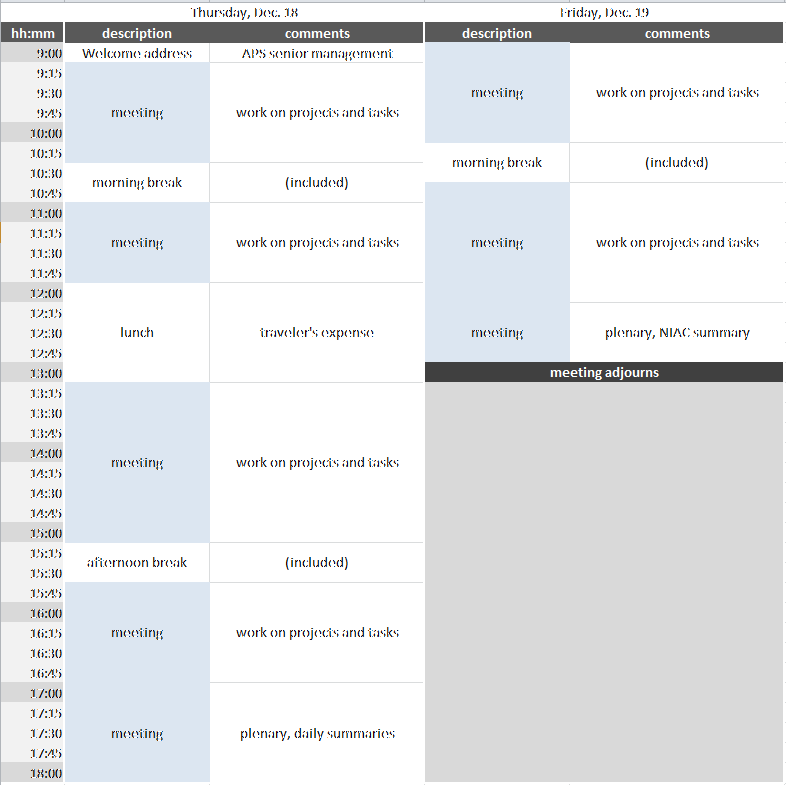

NIAC2014 Meeting¶
NIAC Meeting¶
This is a meeting for members of the NeXus International Advisory committee and other interested persons. It generally discusses matters of policy and strategy, but can discuss specific NeXus instrument definitions if the relevant experts are in attendance.
See NIAC2014 for administrative details about this meeting.
Schedule¶
The NIAC2014 Meeting takes place in building 437, conference room C010, starting at 9am. Evening meal is planned for 7 pm each day.

Notes:
amenities at morning and afternoon breaks will be provided
breakfast, lunch, dinner will be in a local restaurant at traveler’s expense
Items for Agenda¶
Votes on new members
Electing new officers, candidates get ready!
Revise Constitution Terms of Reference:
item 3: change wording of “instrument and group class definitions” to contemporary terms (base classes and instrument definitions)
Examination of contributed definitions and consideration for ratification:
joint CIF/NeXus NXmx
NXarpes
NXcanSAS
NXcite
NXgrating
NXstxm
NXtransformations
NXzone_plate
others …
Deprecation of NeXus polar coordinate system, NXgeometry?
Do we want better standardization and documentation of NeXus processes?
Discussion about how we assign priorities and respond to the community
Do we want NeXus Interfaces for improving base class documentation?
application definitions: can some items be optional?
Data Features (lightweight tags with recipes) versus application definitions?
Rules for multi file NeXus files
NXdata:
proposal: describe how to find the default data
proposal: describe how data are related (particularly: axes and uncertainties)
NXformula
NIAC Agenda¶
Thursday¶
Introduction - Confirmation of new members
Coffee
Ratifications
NXmx
Deprecate old positioning schemes
Axes & Errors
Lunch
Ratifications
NXstxm
NXfluo
Contributed definitions
NXformula
optional fields in application definitions
sequence_index
Thumbnail storage
Finding default data
Features
Friday¶
NeXus Procedures including Funding, certification etc.
Election of officers
Backlog from Thursday
1PM: NIAC terminates
Minutes¶
Thursday Morning¶
Present members: as listed on NIAC2014.
Welcome address by John Maclean (Acting Division Director for Engineering Support).
Mark K introduction on activities since last meeting, including code camp. As well as proposed list of topics and agenda. (SLIDES?)
Agenda approved as above.
New Members approved (all in favour):
Mark Basham for Diamond
Tobias Richter for ESS
Claudio Ferrero for ESRF
NXmx, NXtransformations and variants accepted as proposed (all in favour).
NXgeometry deprecated - manual expresses warning not to use in the future (all in favour).
polar_angle and azimuthal_angle stay unannotated in the manual (1 abstain, 1 against).
CIF style marked as preferred method for expressing geometry in the manual (1 abstain).
Presentation on multidimensional axes by Pete Jemian.
Coffee break.
Vote on proposal for NXdata axes with indices attribute only required when required to resolve ambiguity. All in favour. Vote on proposal with indices required as in 2014_axes_and_uncertainties. Accepted: 9 in favour. Strong disagreement by Ray Osborn as adoption is noted: “Adoption of NeXus will be hampered by additional complexity being required unnecessarily”. Ben Watts would like to add that the default plot in NXdata should be simple and not contain more data than required. He may make a proposal at that end in future.
Eugen clarified the preference to use arrays where possible to avoid string parsing. No objections. Proposal amended.
Pete Jemian presenting proposal for uncertainties. No agreement on best way forward. All three possibilities (field_uncertainties, attribute to field, and attribute to parent group) all have pros and cons. We reserve all schemes and explore further. NIAC will see a proposal when experience has been gained with all variations.
Lunch
Thursday afternoon¶
Ratification of new and amended base classes and definitions.
NXfluo Update_for_NXflou_application_definition Resolution: Proposal is in agreement with existing scan rules. No vote required. Further amendments to the application definition may be required, but that needs to be refined. Mark B and Eugen W will work on that.
NXapres: Unanimously accepted in the current form in contributed_definitions.
NXstxm: Accepted as proposed (lives in development branch on definitions repo on github). (all in favour)
NXcite: Accepted with the addition of URL field. (unanimous)
NXfresnel_zone_plate: Accepted under proviso that the NXgeometry is removed. (unanimous)
Discussion of proposed muon classes in contributed. They need revision. (no vote)
Clarification decision: By default values are readback values. If demand values are to be recorded for consistency the recommended way of naming the data field is to append _set to the dataset name, as in energy_set for example. (6 in favour, 6 abstain)
Coffee break with generous supply of nibbles by our host. (Many thanks, Pete!)
NXformula: Agreed as research project (no vote). No evaluation of formula intended by consumer, use in documentation only. Will be developed by Eugen. Use of attributes may be required to find formula for data. muparser may or may not be sufficient.
NXgrating: Accepted as in development branch. Required revision of NXmonochromator to go with that agreed (pending).
Optional fields in application definitions (minOccurs=0): All in favour of allowing that.
sequence_index to be added to NXprocess and NXnote to allow for encoding a sequence of operations or notes. All in favour.
Discussion of preference on multiple NXprocess or few NXprocess with NXnotes inside. No consensus. Will allow the community to gain more experience.
Adding “default” attribute at root and entry level in order to find default NXentry and NXdata for plotting. All in favour.
Providing thumbnails for OS support. Accepted for exploration at NXroot level.
Research Projects
NeXus features (presented by Tobias and Mark B): All in favour of that effort. Validation in python seen as good approach. NXmx good first target, because existing validation fails. Muons will be interested. Needs some more ground work and documentation before giving the word out. Integration with NeXpy promising. “features” reserved in NXentry. All in favour.
Interfaces (presented by Mark K): Works in a similar way for base classes what features do at a higher level (NXentry). Presentation well received. No motion, no vote.
Ray reports on effort for pyro for remote access of NeXus files in NeXpy.
No backlog from this day.
Ben reports on acquisition with decimated counts. Adding “decimated” to acquisition_mode in NXdetector would help. All in favour.
Adding “nominal” to NXmonitor would help normalising data to a nominal flux for example. Proposed and accepted (2 abstain).
“rgbimage”, “rgbaimage”, “hslimage”, “hslaimage”, “cmykimage” to be added to the interpretation attribute of datasets to encode 3d datasets with colour as added dimension to the 2d image. Improve documentation as well. All in favour.
Introduction to tomorrow’s topics.
Vote on changing the constitution to agree with current terms (application definition and base class). All in favour.
Vote on removing the Procedures section of the Constitution since it was never actually in use. All in favour. Wiki changed in line with both proposals.
Dinner proposed and accepted.
Friday Morning¶
Procedural questions.
Robert’s rule to be followed for setting agenda. All in favour (1 abstain).
Action for next chairmen to contact detector vendors and invite them to discussions in order not to give the perception that the NIAC relationship to Dectris is in any way special. All in favour.
Proposal to open nexus-tech discussions to everyone. Mailing list traffic to be channeled to the general mailing list (or the committee). Hangout open all interested parties (vendors, non-members). All in favour.
Funding. Discussion on how money could help to improve NeXus adoption. No strong case made for continuous funding for tutorials, developers or meetings. Topical funding for tutorials at specific meetings is seen as a good idea. Herbert will look into that.
Mark B to investigate a review of NeXus by the Software Sustainability Institute in their next proposal cycle.
Coffee
Election of Officers
Mark K comes to the end of his second term as chair and cannot stand again.
Chair: Tobias elected (1 abstain)
Executive Secretary: Mark K elected (1 abstain)
Documentation Release Manager: Pete Jemian reelected (1 abstain)
Technical Manager: Eugen Wintersberger (2 abstain)
All in favour of renaming the Technical Subcommittee Chair role to Technical Manager.
Group photo
Ray suggests using the wiki for voting. No general agreement. Record keeping of email and presence votes is not ideal currently. Committing data to a repo might be an idea. Other suggestions were use of forum software.
The secretary is tasked with exploring options to improve voting processes and recording. (1 abstain)
Many thanks to the kind host. The committee thanks the outgoing officers. Meeting concluded.